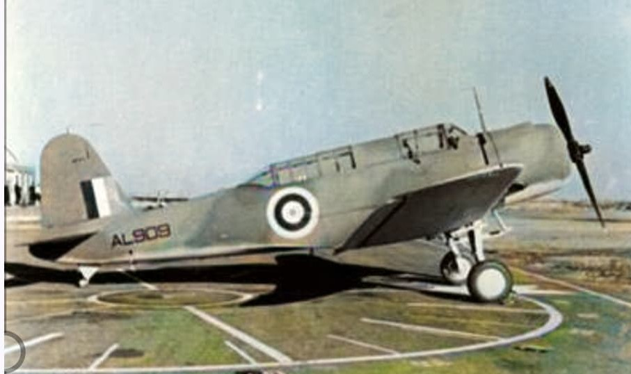

Présentation générale
Le Vought V‑156F est la version française du bombardier en piqué américain SB2U Vindicator.
Commandé en urgence en 1939, il est livré en 1940 pour renforcer les unités de bombardement
de l’Aéronavale et de l’Armée de l’Air.
Bien que dépassé dès son arrivée, il participe néanmoins à plusieurs missions durant la
campagne de France, notamment contre les colonnes blindées allemandes.

Caractéristiques techniques
- Type : Bombardier en piqué / attaque au sol
- Constructeur : Vought Aircraft Company (USA)
- Premier vol : 1936 (SB2U), version française 1939
- Exemplaires livrés à la France : 40
- Équipage : 2 (pilote + observateur / mitrailleur)
- Moteur : Pratt & Whitney R‑1535 Twin Wasp Junior, ≈ 825 ch
- Envergure : 12,80 m
- Longueur : 10,20 m
- Hauteur : 3,80 m
- Poids max : ≈ 3 000 kg
- Vitesse max : ≈ 390 km/h
- Plafond : ≈ 6 500 m
- Autonomie : ≈ 1 000 km
- Armement : 2 mitrailleuses de 7,5 mm (1 fixe + 1 mobile)
- Charge offensive : ≈ 450 kg de bombes
- Rôle : attaque au sol, bombardement en piqué
Silhouette et particularités
Le V‑156F possède une silhouette typique des bombardiers en piqué de la fin des années 1930 :
train fixe caréné, cockpit biplace en tandem, ailes basses et une grande verrière.
- Train fixe avec carénages aérodynamiques
- Verrière longue pour le pilote et l’observateur
- Capot moteur arrondi typique des moteurs radiaux
- Camouflage français brun‑vert / gris‑bleu
Rôle opérationnel
Engagé en 1940, le V‑156F effectue des missions d’attaque au sol contre les colonnes allemandes.
Malgré sa vitesse limitée et son armement faible, il est utilisé courageusement par les équipages
français dans des conditions difficiles.
- Unités : Aéronavale, Armée de l’Air
- Engagements : campagne de France (mai–juin 1940)
Page du Musée HOP WW2 – Section bombardement